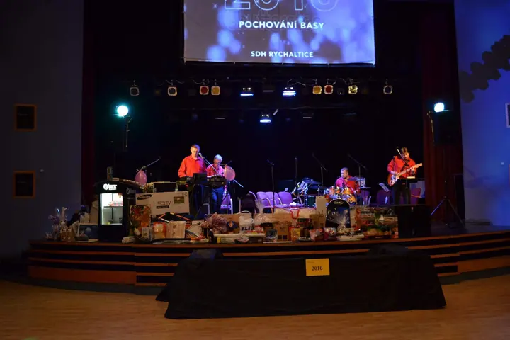
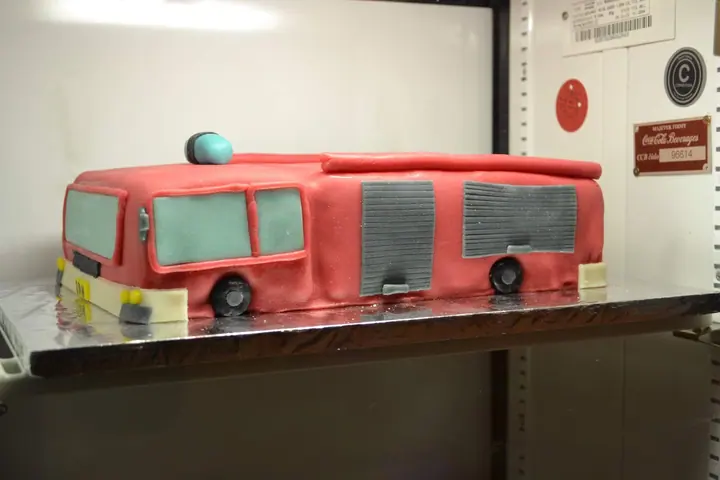
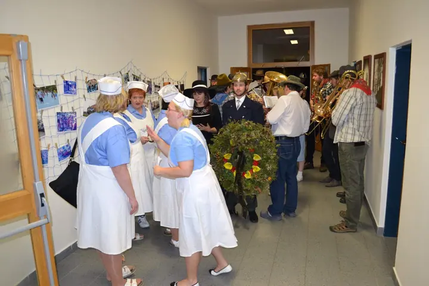
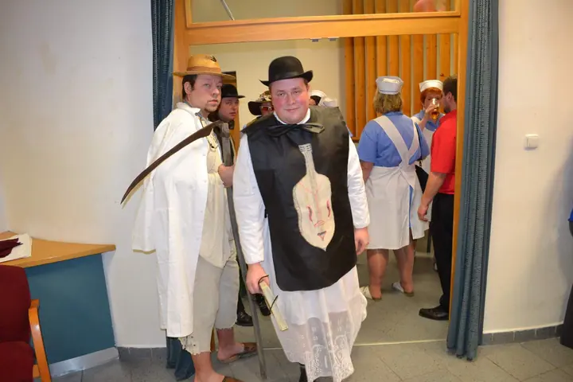
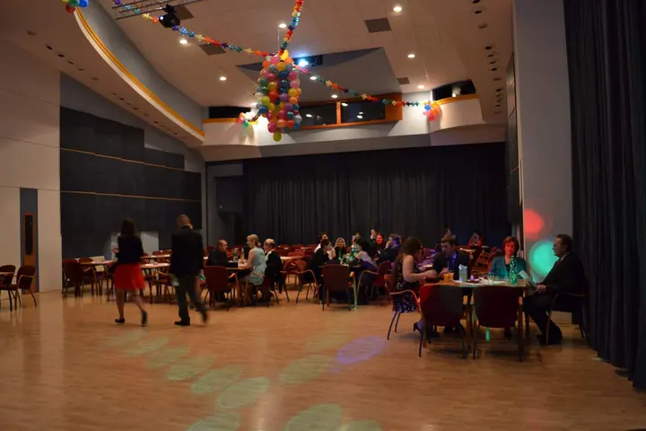
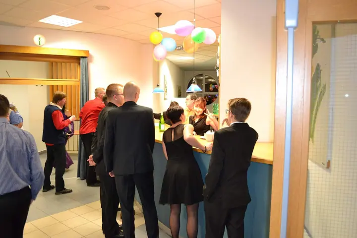
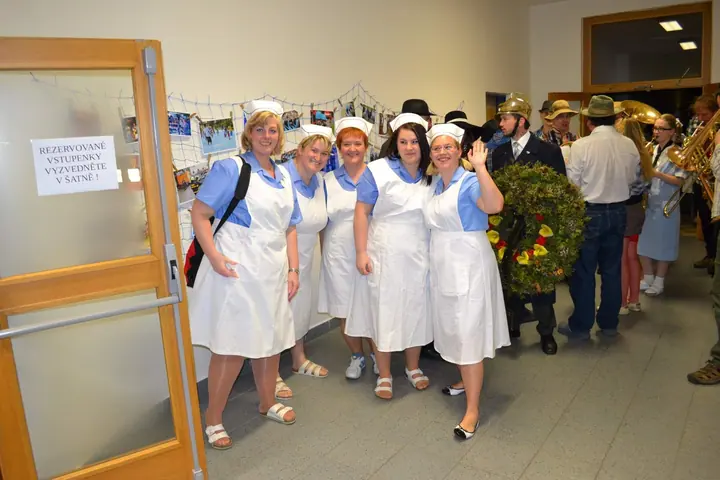
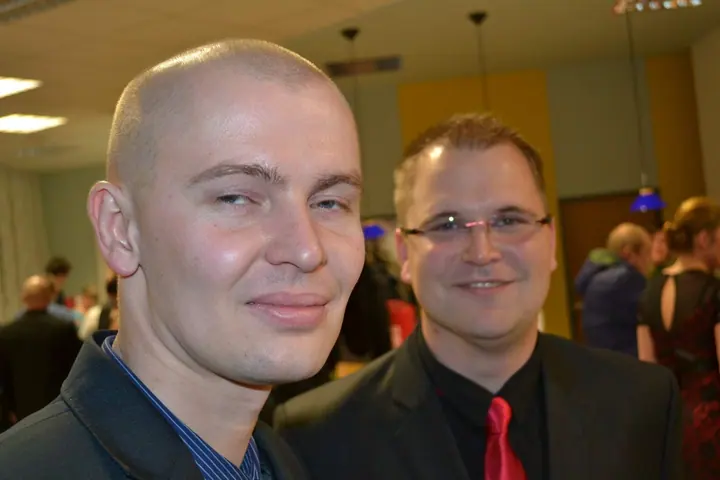
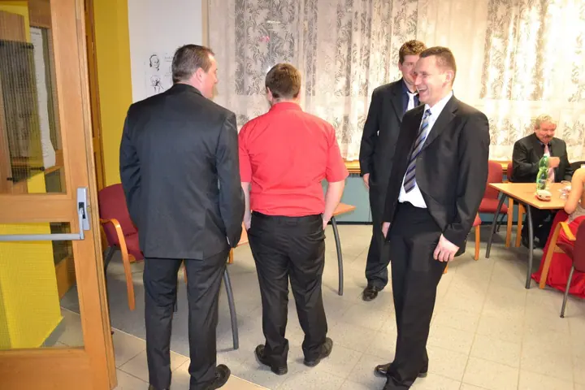

01 / 01
Fotografie z akcí sboru
Fotíme vlastní akce Sboru dobrovolných hasičů Rychaltice, třeba pochování basy s tombolou a maskami. Všechno najdete v naší oficiální fotogalerii.
Zeptat se na termín→








Fotogalerie hasičů z Rychaltic
Zeptat se na termín →(01) Ahoj
Jsme Sbor dobrovolných hasičů Rychaltice a tohle je naše oficiální fotogalerie . Najdete tu fotky z akcí sboru, od masek až po tombolu na pódiu .
(02) Co fotím
01 / 01
Fotíme vlastní akce Sboru dobrovolných hasičů Rychaltice, třeba pochování basy s tombolou a maskami. Všechno najdete v naší oficiální fotogalerii.
Zeptat se na termín→(04) Postup
Od první zprávy po hotovou galerii.
Krok 1 z 4
Pořádáme vlastní akce, třeba pochování basy s hudbou, maskami a tombolou.
Krok 2 z 4
Během večera fotíme hosty, program i masky.
Krok 3 z 4
Fotky nahráváme do oficiální fotogalerie sboru, kde si je může prohlédnout každý.
Krok 4 z 4
Pokud chcete fotku použít, napište nám předem na info@sdhrychaltice.cz.
Masky, tombola a pochování basy
(05) Za objektivem
Jsme Sbor dobrovolných hasičů Rychaltice. Naše akce rádi fotíme a fotky ukládáme do oficiální fotogalerie sboru, kde jich je už přes 13 000.
Ve fotkách uvidíte život sboru tak, jak se opravdu odehrál: pochování basy, masky v průvodu, tombolu na pódiu i dort ve tvaru hasičského auta.
Autorem a vlastníkem všech fotografií je náš sbor. Když nějakou fotku potřebujete použít nebo máte jiný dotaz, napište nám e-mail.
SDH
SDH Rychaltice · Oficiální fotogalerie sboru dobrovolných hasičů
Všechny máme v oficiální fotogalerii Sboru dobrovolných hasičů Rychaltice na Rajčeti.
Bez svolení autora je použití fotografií zakázané. Fotky chrání autorský zákon č. 121/2000 Sb.
Autorem a vlastníkem všech fotografií je Sbor dobrovolných hasičů Rychaltice.
Nejlépe e-mailem na adrese info@sdhrychaltice.cz.
(07) Kontakt
Napište pár vět o tom, co si představujete, a termín, který se vám hodí.
info@sdhrychaltice.cz